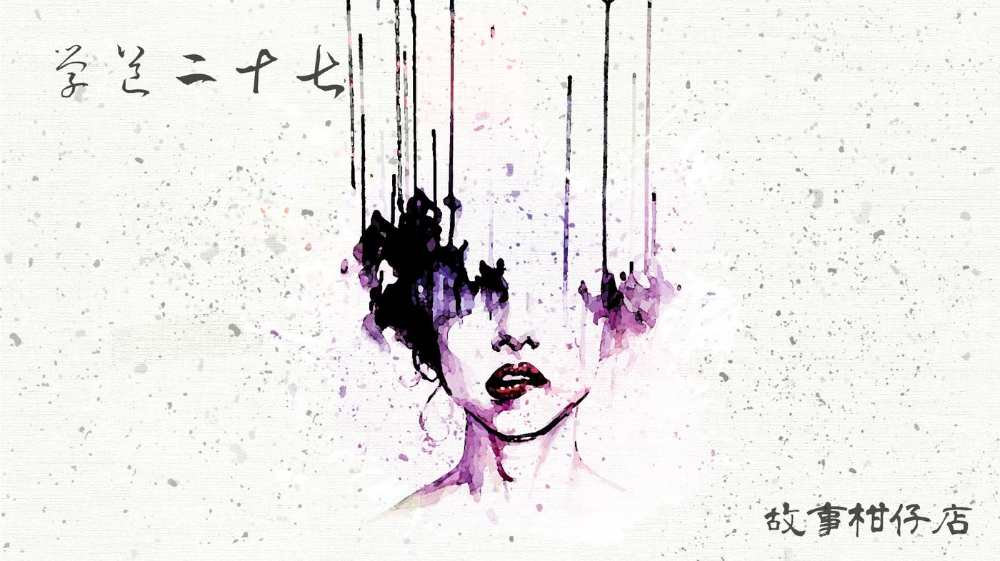

玄墨行者．學道（二十七）：臥底

這是一個晨曦透過林葉灑落的早晨，很遠很遠的天際有禽鳥的啼叫，聲音落進山谷，漸漸消失無蹤。
孤峰從沒那麼安靜過。虹月心想。是拾兒不在的關係吧。
三天前，她還正跳著繩呢，拾兒走了出來，將包包甩在肩上，臉一揚，「我走了！」左眼那道疤，讓他的臉更加殘破。
還搞不清楚怎麼回事，拾兒已經消失在林中。
當天晚餐時分，氣氛特別奇怪。平素最愛開玩笑的六師叔一語不發，七師叔怯怯地說：「師哥，讓拾兒回來吧，給他個教訓就夠……」
話還沒說完，天樞重重放下碗筷，拂袖而去。收拾餐桌時，虹月才發現筷子裂開了。
她憋著滿肚子疑問，好不容易捱到回廂房，纏著玉衡問究竟發生什麼事。
玉衡一說，虹月便急得淚眼汪汪，「師父，您沒有替拾兒說話嗎？」
玉衡沈默了。會議上，連天權都出聲了，唯獨她未吐隻字片語，卻在刀光劍影中異常思念天璣。
拾兒承了天璣的慈，不趕盡殺絕，卻又比天璣更反骨。看他一頭張揚的捲髮便知道了，性倔脾硬；那張臉又破了相，非得入塵世滾過一輪不可。
如果天璣還在，他會怎麼做？
一思及此，原本要替拾兒說情的嘴又抿住了。她眼睜睜看著拾兒抬頭挺胸站了起來，毫不畏懼地面向七星劍，面向天樞，然後轉過頭，大跨步走出內堂。
她不知道該怎麼向虹月解釋自己的心思，隔著層肚皮，終究是有些隔閡。只開著小夜燈的廂房裡，暈暈黃黃，虹月臉上那一大片胎記也被黃光抹了去似的，一派清麗，卻含著兩泡淚，不敢落下。
玉衡從矮桌上的鏡子瞧見自己，這等昏黃竟也遮不住兩鬢叢生的白髮。
「虹月，妳想去找拾兒對吧？」
虹月沒有作聲，只是一對鹿一般的眼睛驚異地看著玉衡。
看到那樣的表情，玉衡便了然於心。
她安撫虹月先睡下，自己輾轉一夜。恍惚有夢，彷彿看見天璣笑盈盈走來，她伸手，天璣只是搖搖頭，身影漸散。
當夜，不只這廂房騷動難靜，另一頭的廂房也暗潮洶湧。
大曲替師父鋪好了床，天樞和衣，露出嶙峋背脊，沿著脊椎有一道宛如山脈隆起的深紫凸疤。即使不是第一次見到，大曲仍覺怵目驚心。
「拾兒被逐出師門，你有何看法？」很難得的，這夜天樞竟開了話題。
大曲嘴上說，他私通妖族，罪有應得。可不知道為什麼，他心中有一絲絲愉快之情。
「玄墨七者不能少。你得準備準備。」
說完，天樞便睡下了。這下子，換大曲睡不著了。
他不明白師父的意思，或者是，不敢明白。難道師父要他頂替拾兒的位置嗎？若真是如此，那他豈不成了替代品？可轉念一想，倘若照規矩來，他得撐多久才能上位？
大曲側著身，聽得見自己突突的心跳，弄不清是興奮，或是擔憂。
隔天晌午，蒙叟竟傳了虹月。按理說，未過成年禮，是不能接派任務的。為秉公正，蒙叟特地要天樞同行作證。
這實在是破天荒的事，大夥兒聚在內堂，開陽還作態貼耳蒙叟廂房偷聽，忽然門開，虹月低著頭隨著天樞走了出來。
天樞臉上的神色說不清是什麼，像一團灰，像一團來不及理清的迷霧。他理理衣襟，向大家宣布：預天儀顯示山下某處有隱約妖氣，恐怕是新妖族正在孕育茁壯，蒙叟指派虹月前往該地常駐，監看動靜。一來是為了成年禮做準備，二來則是因為玄墨人手吃緊，不可能派出七者之一常駐該地。
大夥靜靜聽完，瑤光率先發難：「這行嗎？虹月還沒成年，豈不太危險？」
天璇睨他一眼，道：「入了玄墨門，還能怕危險？」
開陽說：「拾兒剛走，虹月又要去當臥底，山上愈來愈冷清啦！」
所有人你一言我一語，沒發現玉衡與虹月只是靜靜的低著頭，不看對方。
－－－－－
#新連載依舊兩天一篇每晚準時六點半喔
#請人客多多指教
#記得去各大書店買我們的書故事柑仔店哩